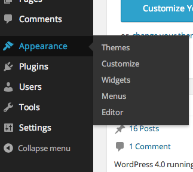
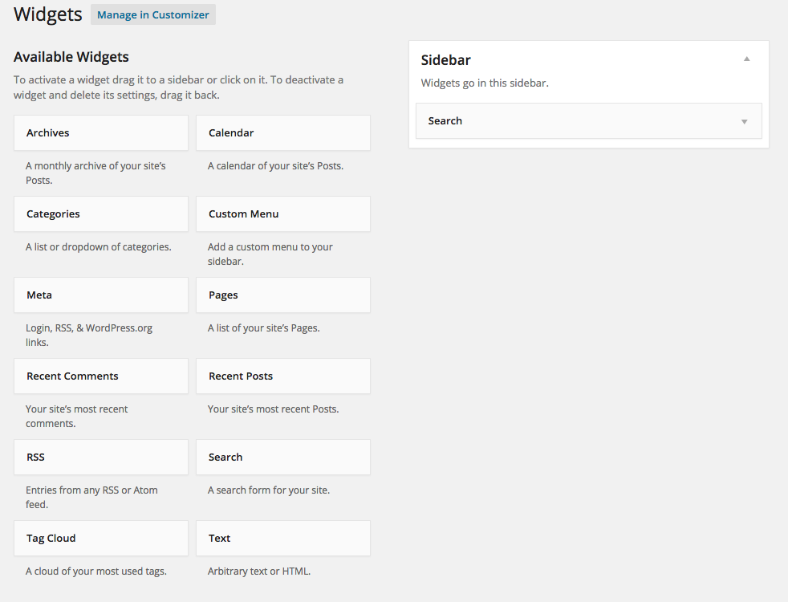

Start by creating a blank document and title it sidebar.php and then add this:
<div id="sidebar">
<?php dynamic_sidebar('Sidebar'); ?>
</div>This will import the sidebar from your Dashboard to wherever you place it. Let’s add it to page.php:
<?php get_header(); ?>
<?php get_sidebar(); ?>
<div class="page">In functions.php we need to register the sidebar for WP Dashboard:
$sidebar = array(
'name' => 'Sidebar',
'id' => 'sidebar',
'description' => 'Place widgets here.',
);
register_sidebar($sidebar);If needed, later multiple sidebars can be added.
Once functions.php is uploaded, widgets will appear in the menu.
Then you can dynamically change what appears in the sidebar:
